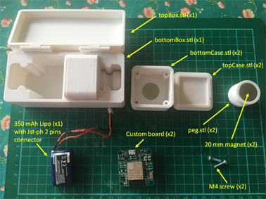
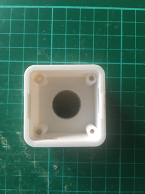
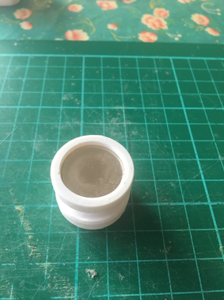
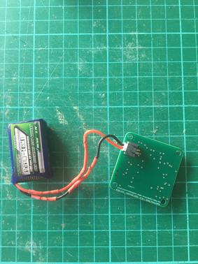
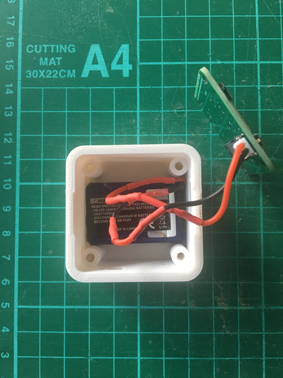
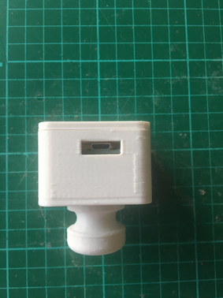
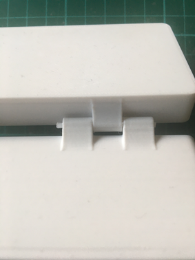
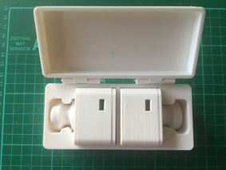

System Build
What do you need
Building the components for the project is extremely simple and requires only the following parts.
Stl files
All the stl files can be downloaded at this link zip file
Custom board
The custom board can be ordered from seed fusion for example (or other PCB services like Eurocircuit, jlcpcb, etc). Gerber files can be downloaded on the hardware section. I have already made several PCBs at seed Fusion and the service is fast and good. The price for 10 PCBs is around 15€ + the shipping costs. When ordering the PCBs, don’t forget to order the stencil to apply the solder paste.
Then you have to get the necessary components to assemble the PCB (the BOM is given in the hardware section, and Mouser or Digikey is your friend), assemble the components either with a brussel clamp or using a Pick & Place machine, then use a reflow oven to solder the components. If you assemble the board manually, first pass the board with all the small components through the reflow oven and solder the ESP32 and the JST-PH connector on the bottom of the board by hand.
Another solution if you don’t want to waste time manually assembling the board is to use the PCB Assembly service from seed Fusion. Under this service, seed Fusion will source your components based on the BOM, manufacture your PCB and do the assembly and soldering of the PCB. The disadvantage of this service is that you will not be able to order less than 10 boards and it will cost you about 140€ for these 10 boards + the shipping costs.
20 mm magnet
20 mm neodym magnet can be ordered at supermagnet.fr
Lipo 1S battery
A 350 mAh Lipo battery is recommended. 500 mAh Turnigy lipo from hobbyking is also a good choice.
With the turnigy 500 mAh battery, the autonomy of one device is around 3h of use.
How to build assemble one board
Step 1 : Mounting the magnet in the lower part of the case
Use some epoxy glue to secure the magnet.
Step 2 : Mounting of the magnet in the base part of the peg
Use some glue also to secure the magnet.
Step 3 : Connect the Lipo battery on the custom board
Step 4 : Install the lipo battery on the bottom case
Step 5 : Screw the custom board on the bottom case
Screw the board using only two screw.

Step 6 : Put the top case on the bottom case
Two snap fit are provided to secure the top case and facilitate the disassembly
Step 7 : Assembly of the storage box
The bottom and the top of the box are assembled with two hinges through which a 1.75 mm PETG wire is passed.
The box is designed to receive a set of two devices.
How to use the devices
TBD.